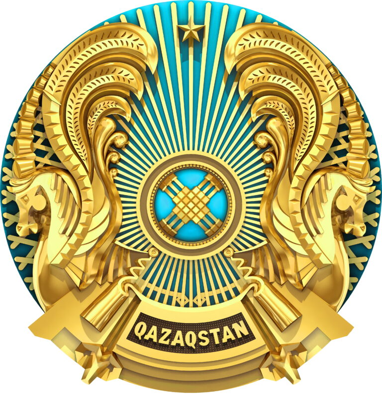

Я и моя Родина
Карта Казахстана

Мемлекеттік рәміздер
Ту

Елтаңба
Әнұран
Алтын күн аспаны,
Алтын дән даласы,
Ерліктің дастаны,
Еліме қарашы!
Ежелден ер деген,
Даңқымыз шықты ғой.
Намысын бермеген,
Қазағым мықты ғой!
Қайырмасы:
Менің елім, менің елім,
Гүлің болып егілемін,
Жырың болып төгілемін, елім!
Туған жерім менің – Қазақстаным!
Ұрпаққа жол ашқан,
Кең байтақ жерім бар.
Бірлігі жарасқан,
Тәуелсіз елім бар.
Қарсы алған уақытты,
Мәңгілік досындай,
Біздің ел бақытты,
Біздің ел осындай!
Қайырмасы:
Менің елім, менің елім,
Гүлің болып егілемін,
Жырың болып төгілемін, елім!
Туған жерім менің – Қазақстаным!
Қазақстандағы этникалық топтар
Қазақстан – көпұлтты әрі көпмәдениетті мемлекет, онда 130-дан астам этнос өкілдері бейбітшілік пен келісімде өмір сүреді. Тарихи тұрғыдан алғанда, бұл аймақ түрлі халықтар мен мәдениеттердің тоғысқан орталығы болды. Бүгінде Қазақстан халқының негізгі бөлігін қазақтар, орыстар, өзбектер, украиндар, ұйғырлар, татарлар, немістер, корейлер және басқа да этностар құрайды. Елдегі этностық әртүрлілік – Қазақстанның баға жетпес байлығы. 1991 жылы тәуелсіздік алған сәттен бастап, мемлекет ұлтаралық келісім мен этносаралық татулықты басты құндылықтардың бірі ретінде ұстанып келеді. Бұл саясаттың маңызды құралы – 1995 жылы құрылған "Қазақстан халқы Ассамблеясы". Ассамблея этностар арасындағы достық пен ынтымақтастықты нығайтуда маңызды рөл атқарады. Қазақстанда әрбір этностың мәдениеті мен дәстүрін сақтау үшін ерекше жағдай жасалған. Елімізде көптеген этномәдени бірлестіктер, ұлттық орталықтар мен мектептер жұмыс істейді. Сондай-ақ, мемлекеттік деңгейде әр этностың тілін дамытуға қолдау көрсетіледі. 20-дан астам этникалық тілде газет-журналдар шығады, радио және телебағдарламалар жүргізіледі. Жыл сайын Қазақстанда түрлі этностардың мәдениетін дәріптейтін фестивальдер, ұлттық мерекелер және мәдени іс-шаралар өткізіледі. Бұл оқиғалар халықтар арасындағы өзара сыйластық пен ынтымақтастықты арттырып, ұлттық бірлікті нығайтуға септігін тигізеді. Еліміздің Конституциясы мен мемлекеттік саясаты Қазақстандағы барлық этностың тең құқығы мен еркіндігін қамтамасыз етеді. Мемлекет көпұлтты қоғамның үйлесімді дамуы үшін «Бірлік пен әртүрлілік» қағидатын басшылыққа алады. Осылайша, Қазақстан өзінің этностық әралуандығын ұлттың басты байлығы ретінде бағалап, бейбітшілік пен тұрақтылықты сақтауға бағытталған саясат жүргізіп келеді.